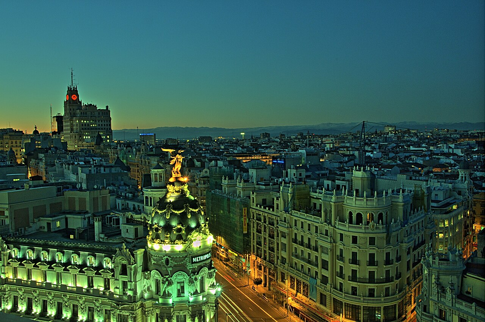
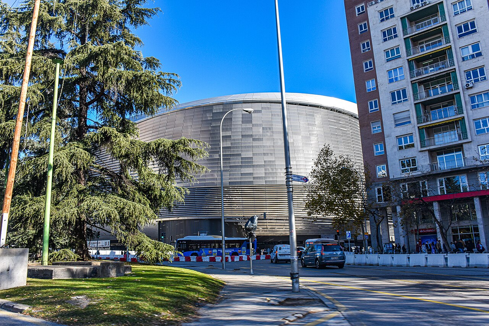

1. Мадрид, Іспанія

Коротко про місто
Мадрид — столиця і найбільше місто Іспанії, де живе понад 3,4 мільйона людей. Місто стоїть у центрі Піренейського півострова на висоті близько 650 метрів і поєднує королівські палаци, великі музеї та широкі бульвари з дуже активним вуличним життям.
Чому я обрав це місто
Я давно вболіваю за «Реал Мадрид», і моя мрія — побачити Ель Класіко проти «Барселони» наживо на «Сантьяго Бернабеу». Після реконструкції стадіон став одним із найсучасніших у світі, і хочеться відчути атмосферу 80 тисяч уболівальників. А ще в Мадриді можна поєднати футбол із прогулянками музеями.

Цікаві факти
- Площа Пуерта-дель-Соль — «нульовий кілометр»: від неї відраховують відстані доріг Іспанії.
- Мадрид — одна з найвище розташованих столиць Європи.
- Стадіон «Сантьяго Бернабеу» відкрили в 1947 році; після реконструкції він має висувне поле та дах.
- Парк Буен-Ретіро і бульвар Пасео-дель-Прадо внесено до списку Світової спадщини ЮНЕСКО у 2021 році.
Визначні місця
- Стадіон «Сантьяго Бернабеу»
- Музей Прадо
- Королівський палац
- Парк Буен-Ретіро
- Площа Пласа-Майор
- Вулиця Гран-Віа
Моя оцінка
10 / 10 — футбол, історія та атмосфера великого міста.
Більше інформації: Мадрид у Вікіпедії